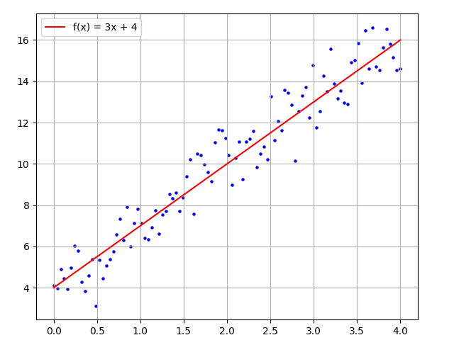
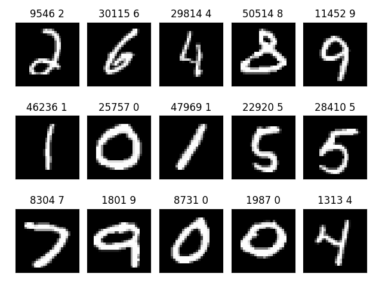

1.3 Data Representation
Created Date: 2025-05-01
The data you'll manipulate will almost always fall into one of the following categories:
Vector data - Rank-2 tensors of shape (samples, features), where each sample is a vector of numerical attributes ("features").
Timeseries data or sequence data - Rank-3 tensors of shape (samples, timesteps, features), where each sample is a sequence (of length timesteps) of feature vectors.
Images - Rank-4 tensors of shape (samples, height, width, channels), where each sample is a 2D grid of pixels, and each pixel is represented by a vector of values ("channels").
Video - Rank-5 tensors of shape (samples, frames, height, width, channels), where each sample is a sequence (of length frames) of images.
1.3.1 Features
The most simplest features is point, For example a point in a 2D space:
point1 = torch.tensor([0.5, 1])It's common to picture a vector as an arrow linking the origin to the point, as show in figure:

1.3.2 Text
This is a dataset for binary sentiment classification containing substantially more data than previous benchmark datasets. We provide a set of 25,000 highly polar movie reviews for training, and 25,000 for testing.
import sys
import pathlib
project_root = pathlib.Path(__file__).resolve().parents[2]
sys.path.append(str(project_root))
from common import download
url = 'https://ai.stanford.edu/~amaas/data/sentiment/aclImdb_v1.tar.gz'
file_path = download.download(url, sha1_hash='01ada507287d82875905620988597833ad4e0903')1: For a movie that gets no respect there sure are a lot of memorable quotes listed for this gem. Imagine a movie where Joe Piscopo is actually funny! Maureen Stapleton is a scene stealer. The Moroni character is an absolute scream. Watch for Alan "The Skipper" Hale jr. as a police Sgt. 2: Bizarre horror movie filled with famous faces but stolen by Cristina Raines (later of TV's "Flamingo Road") as a pretty but somewhat unstable model with a gummy smile who is slated to pay for her attempted suicides by guarding the Gateway to Hell! The scenes with Raines modeling are very well captured, the mood music is perfect, Deborah Raffin is charming as Cristina's pal, but when Raines moves into a creepy Brooklyn Heights brownstone (inhabited by a blind priest on the top floor), things really start cooking. The neighbors, including a fantastically wicked Burgess Meredith and kinky couple Sylvia Miles & Beverly D'Angelo, are a diabolical lot, and Eli Wallach is great fun as a wily police detective. The movie is nearly a cross-pollination of "Rosemary's Baby" and "The Exorcist"--but what a combination! Based on the best-seller by Jeffrey Konvitz, "The Sentinel" is entertainingly spooky, full of shocks brought off well by director Michael Winner, who mounts a thoughtfully downbeat ending with skill. ***1/2 from **** 3: A solid, if unremarkable film. Matthau, as Einstein, was wonderful. My favorite part, and the only thing that would make me go out of my way to see this again, was the wonderful scene with the physicists playing badmitton, I loved the sweaters and the conversation while they waited for Robbins to retrieve the birdie.
1.3.3 Audio
A simple audio/speech dataset consisting of recordings of spoken digits in wav files at 8kHz. The recordings are trimmed so that they have near minimal silence at the beginnings and ends.
1.3.4 Image
The MNIST database contains 60,000 training samples and 10,000 test samples of size-normalized handwritten digits. This database was derived from the original NIST databases.
MNIST is widely used by researchers as a benchmark for testing pattern recognition methods, and by students for class projects in pattern recognition, machine learning, and statistics.
